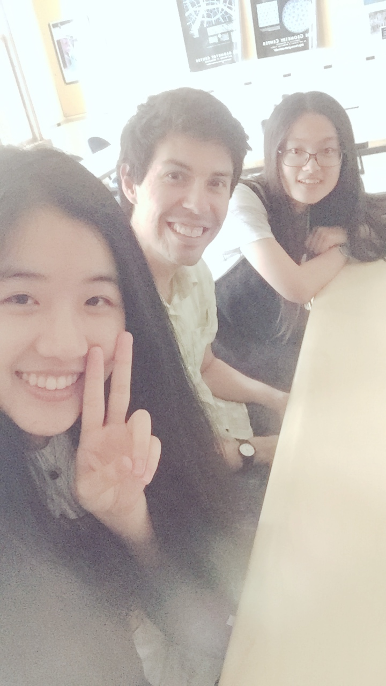

I am an Assistant Professor of Mathematics at Mount Holyoke College. Previously, I was an NSF Alliance for Building Faculty Diversity Postdoctoral Fellow at Iowa State University. Before that, I got my PhD in mathematics at Washington University in St. Louis. See my cv for more details.
Research
I’m interested in probability theory, stochastic processes, and their applications. In the past few years I’ve worked on problems that overlap with billiard dynamical systems, differential geometry, and statistical physics.
Students

- In Spring 2021, I worked with Ruozhen Gong on the relationship between random billiard models and thermodynamics. Her work is documented in this summary report.
- In Spring 2019, I worked with Nicole Andrews on Hidden Markov models related to random billiards. Her work is documented in this write-up.
- In Fall 2018, I worked with Ziyan (Jessica) Feng on random polygonal billiards. Some of her work is documented on this web page.
- In Summer 2017, I worked with Qiran (Karen) Dong and Fanyi (Young) Yang (Mount Holyoke), on a project studying random billiard systems with non-holonomic (rolling) constraints. Here is their talk.
- In 2016, I worked with Tianle (Jeff) Yang (Iowa State) on a project studying the Lorentz gas model with random scatterer collisions.
Papers
- T. Chumley, R. Feres, and L. A. Garcia German. Knudsen diffusivity in random billiards: spectrum, geometry, and computation. to appear in SIAM J. Appl. Dyn. Syst., 2021. [ arXiv ]
- T. Chumley and R. Feres. Entropy production in random billiards. Discrete Contin. Dyn. Syst., 41(3):1319–1346, 2021. [ DOI | arXiv ]
- T. Chumley, R. Feres, and M. Wallace. Exact discretization of harmonic tensors. to appear in Potential Anal., 2021. [ DOI | arXiv ]
- T. Chumley, S. Cook, C. Cox, and R. Feres. Rolling and no-slip bouncing in cylinders. J. Geom. Mech., 12(1):53–84, 2020. [ DOI | arXiv ]
- O. Aydogmus, T. Chumley, A. Matzavinos, and A. Roitershtein. Moran-type bounds for the fixation probability in a frequency-dependent Wright-Fisher model. J. Math. Biol., 76(1):1–35, 2018. [ DOI | arXiv ]
- T. Chumley, R. Feres, and H.-K. Zhang. Diffusivity in multiple scattering systems. Trans. Amer. Math. Soc., 368(1):109–148, 2016. [ DOI | arXiv ]
- T. Chumley. Limit Theorems for Random Billiard Models. PhD thesis, 2013. [ http ]
- T. Chumley, S. Cook, and R. Feres. From billiards to thermodynamics. Comput. Math. Appl., 65(10):1596–1613, 2013. [ DOI | arXiv ]
Teaching

Current courses
- Math 102: Calculus II (Fall 2021)
- Math 301: Real Analysis (Fall 2021)
Past courses
Math 101: Calculus I (Spring 2019)
Math 211: Linear Algebra (Spring 2017)
Math 232: Discrete Math (Fall 2018)
Math 333: Differential Equations (Spring 2018)
Math 339SP: Stochastic Processes (Spring 2017, 2018, 2019)
Math 342: Probability (Fall 2016, 2017, 2018; Spring 2021)
Stat 395: Independent study, Statistical Analysis of Networks (Fall 2017)
Prior to coming to Mount Holyoke I taught:
- Introduction to Statistics (Summer 2009, Summer 2010 at Washington University)
- Calculus I (Summer 2008 at WUSTL)
- Calculus II (Fall 2013, Fall 2015 at Iowa State University)
- Linear Algebra (Summer 2012 at WUSTL, Spring 2014 at ISU)
- Real Analysis (Fall 2014 at ISU)
Miscellaneous

- I am honored to have appeared in the Lathisms 2020 calendar. I was also featured in an MAA Focus article about Lathisms.
- The image above is a visualization of my Math genealogy.
- Information on summer research programs for math/stat students.
- Mount Holyoke math/stat student summer activities.
- An MCMC demonstration for crytography that I made for talk.
- Some notes that I’ve written for myself on getting started with swarm2, the high performance computing cluster at UMass.